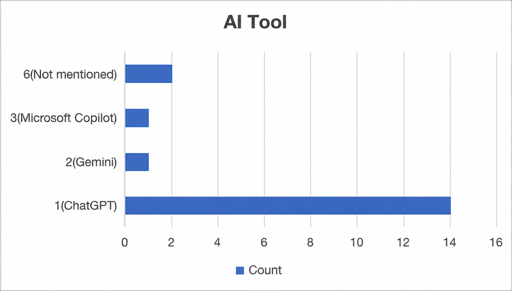
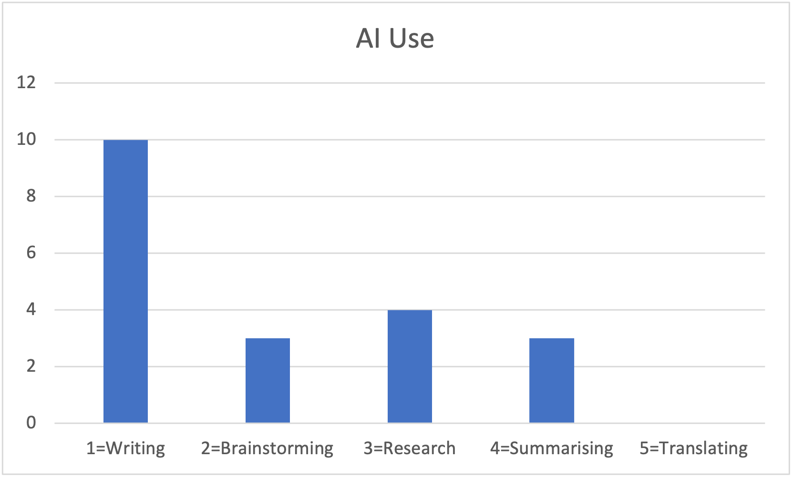
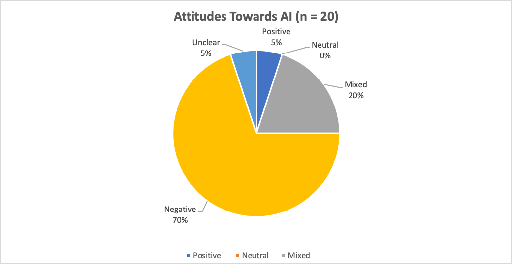
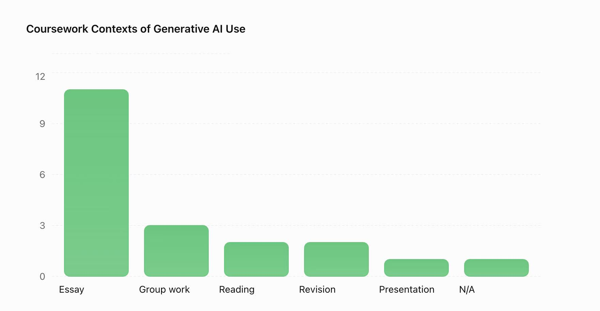
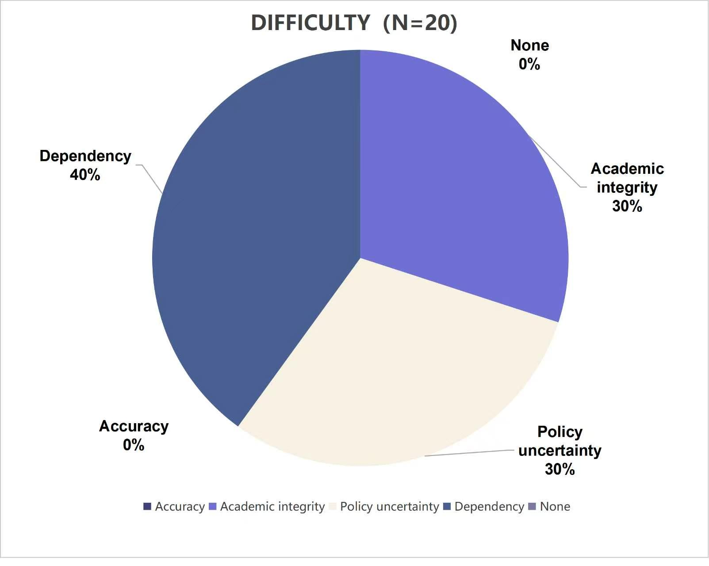

Week 1
In Week 1, our tutor gave us an introduction to this course. I got familiar with the campus environment and classroom atmosphere. I am eager to work hard and learn everything well in this digital‑media subject.
A collection of little things
01 / Week Reflection
In Week 1, our tutor gave us an introduction to this course. I got familiar with the campus environment and classroom atmosphere. I am eager to work hard and learn everything well in this digital‑media subject.
In Week 2, our tutor introduced the fundamentals of webpage creation. I learned these basic web techniques during my undergraduate studies, so this session worked as a useful review for me. Meanwhile, I plan to build this website as a diary to record all my experiences throughout one year of study abroad.
In Week 3, we learned the basic concepts of web scraping. Our tutor introduced two tools: Web Scraper and Python. I understood what web scraping is for — it helps collect useful data from websites. We started with simple tutorials first, then tried manual practice by ourselves. The basic operations felt approachable. I hope I can keep up with the following classes and learn more advanced knowledge.
I have learned that the Internet is not just a place to browse information. Behind every webpage lies massive data collection and transmission. Websites can record user behaviours, and data can be automatically gathered through tools like web scrapers. Yes, it has challenged my previous understanding. I used to think I could freely view online content without leaving traces. Now I realise every click and browse may generate data. While data brings convenience, we must think carefully about privacy and ethics when accessing online information.


In Week 4, our tutor guided us through detailed concepts of research data. Our group started from the broad topic of artificial intelligence, then gradually narrowed it down to our final research focus: generative‑AI experiences among UK university humanities and arts students on Reddit. After defining the theme, each group member took part in data collection, and later we combined all our gathered materials together for coding and analysis.
Through completing the lecture questions, I learned the whole process of turning real social media discussions into analysable data. We designed a research question about how generative AI is used in humanities and arts courses, built a coding framework with clear categories, and converted open‑ended Reddit posts into numerical codes in Excel. This helped me understand how content analysis turns qualitative discussions into quantifiable patterns.
During data collection, we noticed that many of the Reddit posts expressed negative opinions about AI. These posts also seemed to receive more attention, which may have influenced the data we collected. Additionally, some less visible or marginalised groups may be underrepresented in our dataset. As a result, it was challenging to collect a balanced range of perspectives and avoid potential bias.
This experience showed us that data is not completely neutral. Social media platforms can influence which opinions become more visible, while some marginalised groups may be underrepresented. As researchers, we also have the power to decide which data to collect and how to categorise it. These decisions can shape our findings and influence how people understand an issue. Therefore, we need to be aware of potential biases and recognise that data does not always represent everyone's experiences.

In Week 5, we focused on data visualisation based on our Reddit dataset about generative AI among UK humanities and arts students.
I have learned that imagining, categorising and collecting data are not just one‑off steps. Before collection, we need to think clearly about what questions we want to answer, which decides what information we should record. When we collect data for different purposes, our understanding of data shifts a lot. For example, if we only want to count how many people mention ChatGPT, we focus on frequency; but if we want to explore students’ attitudes, we have to pay attention to context and nuance in each post, rather than just simple numbers. Data is not neutral; the goal of our research shapes what we treat as valuable information.
We also faced ethical issues. Even though Reddit posts are publicly visible online, these are still personal opinions from students. We avoided sharing identifiable usernames and did not quote posts in a way that could trace back to the original writers. We also considered informed consent: users did not know their comments would be used for academic research, so we tried our best to protect their privacy and avoid misinterpreting their words.
Visualising data brought new challenges. Given our limited sample size, we decided to use basic charts, including pie charts and bar charts, to present our findings. It was hard to balance simplicity and completeness. If we put too much information in one chart, it became messy; if we simplified too much, we might lose important context and mislead viewers. We also needed to make sure our visualisation did not exaggerate the findings because our sample size was limited.





02 / The person behind the pages
Hi, I'm the person behind these pages. I enjoy singing, dancing and playing the piano. I am studying abroad in the UK for one year. I hope to make the most of this experience and complete my overseas study successfully.
This website serves as my personal time-capsule for all precious moments along the journey.